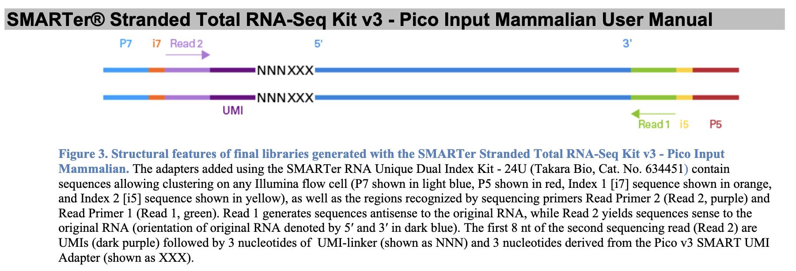

✂️ CutSeq
Automatically cut adapter / barcode / UMI from NGS data, in the right order.
Why CutSeq?
NGS library prep can need many sequential trimming and extraction steps. The SMARTer® Stranded Total RNA-Seq Kit v3 workflow, for example, needs at least 9 operations — adapter removal, UMI extraction, linker masking, poly-A/T trimming — done in the correct order. CutSeq compiles a single library scheme into one native cutadapt pass, so the whole pipeline is one parameter and one command.

Key features
- One-parameter trimming — describe the whole library as a scheme and let CutSeq apply every step automatically.
- Built-in + custom schemes — 70+ bundled libraries (
cutseq --list-adapters) or define your own grammar string. - Barcodes & UMIs — capture and rename inline barcodes / UMIs into read names.
- QC-aware — discard reads with a reason (
too_short,too_many_n, …). - Efficient & reproducible — a single cutadapt pass, no intermediate I/O.
Explore the docs
| Page | What it covers |
|---|---|
| Quick Start | Install + first commands |
| Adapter Schemes | All built-in schemes, with an interactive viewer & .gb download |
| Read Name Renaming | --rename, captures and transforms |
| Spatial (DBiT-seq) libraries | Parsing a spatial barcode-arm library (now part of Adapter Schemes) |
Note
CutSeq is open source and contributions are welcome — see the GitHub repo.